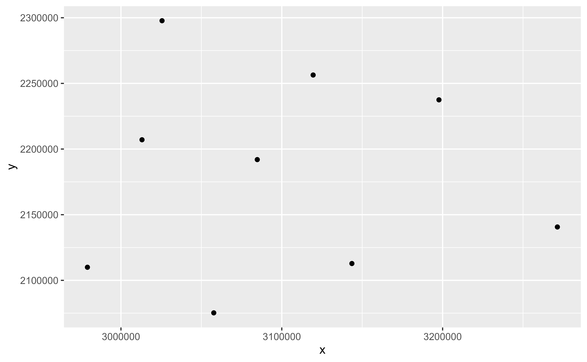
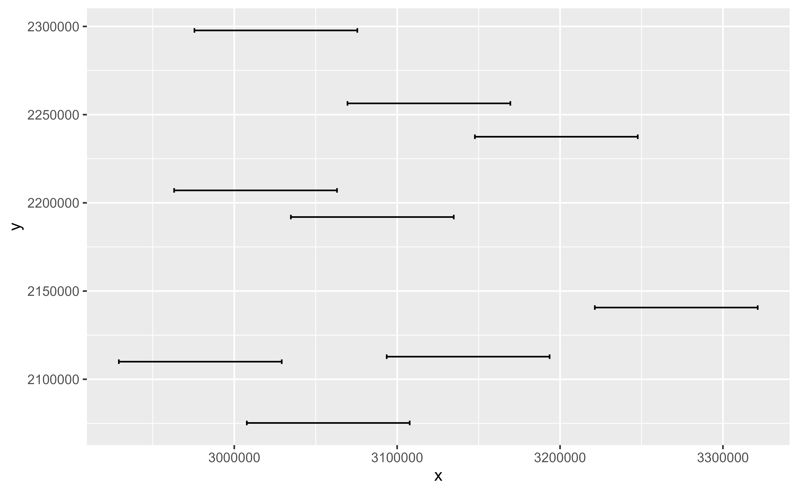

Extract coordinates from SpatVector objects
Source: R/stat-spat-coordinates.R
stat_spat_coordinates.Rdstat_spat_coordinates() extracts the coordinates from SpatVector objects
and summarises them to one pair of coordinates (x and y) per geometry.
Usage
stat_spat_coordinates(
mapping = aes(),
data = NULL,
geom = "point",
position = "identity",
na.rm = FALSE,
show.legend = NA,
inherit.aes = TRUE,
...
)Arguments
- mapping
Set of aesthetic mappings created by
aes(). If specified andinherit.aes = TRUE(the default), it is combined with the default mapping at the top level of the plot. You must supplymappingif there is no plot mapping.- data
A
SpatVectorobject, seeterra::vect().- geom
The geometric object to use to display the data for this layer. When using a
stat_*()function to construct a layer, thegeomargument can be used to override the default coupling between stats and geoms. Thegeomargument accepts the following:A
Geomggproto subclass, for exampleGeomPoint.A string naming the geom. To give the geom as a string, strip the function name of the
geom_prefix. For example, to usegeom_point(), give the geom as"point".For more information and other ways to specify the geom, see the layer geom documentation.
- position
A position adjustment to use on the data for this layer. This can be used in various ways, including to prevent overplotting and improving the display. The
positionargument accepts the following:The result of calling a position function, such as
position_jitter(). This method allows for passing extra arguments to the position.A string naming the position adjustment. To give the position as a string, strip the function name of the
position_prefix. For example, to useposition_jitter(), give the position as"jitter".For more information and other ways to specify the position, see the layer position documentation.
- na.rm
If
FALSE, the default, missing values are removed with a warning. IfTRUE, missing values are silently removed.- show.legend
logical. Should this layer be included in the legends?
NA, the default, includes if any aesthetics are mapped.FALSEnever includes, andTRUEalways includes.You can also set this to one of "polygon", "line", and "point" to override the default legend.
- inherit.aes
If
FALSE, overrides the default aesthetics, rather than combining with them. This is most useful for helper functions that define both data and aesthetics and shouldn't inherit behaviour from the default plot specification, e.g.annotation_borders().- ...
Other arguments passed on to
ggplot2::stat_sf_coordinates().
Value
A ggplot2 layer
Examples
# \donttest{
cyl <- terra::vect(system.file("extdata/cyl.gpkg", package = "tidyterra"))
library(ggplot2)
ggplot(cyl) +
stat_spat_coordinates()

ggplot(cyl) +
geom_errorbarh(
aes(
geometry = geometry,
xmin = after_stat(x) - 50000,
xmax = after_stat(x) + 50000,
y = after_stat(y),
height = 10000
),
stat = "sf_coordinates"
)
#> Warning: `geom_errorbarh()` was deprecated in ggplot2 4.0.0.
#> ℹ Please use the `orientation` argument of `geom_errorbar()` instead.
#> Warning: Ignoring unknown aesthetics: height

# }